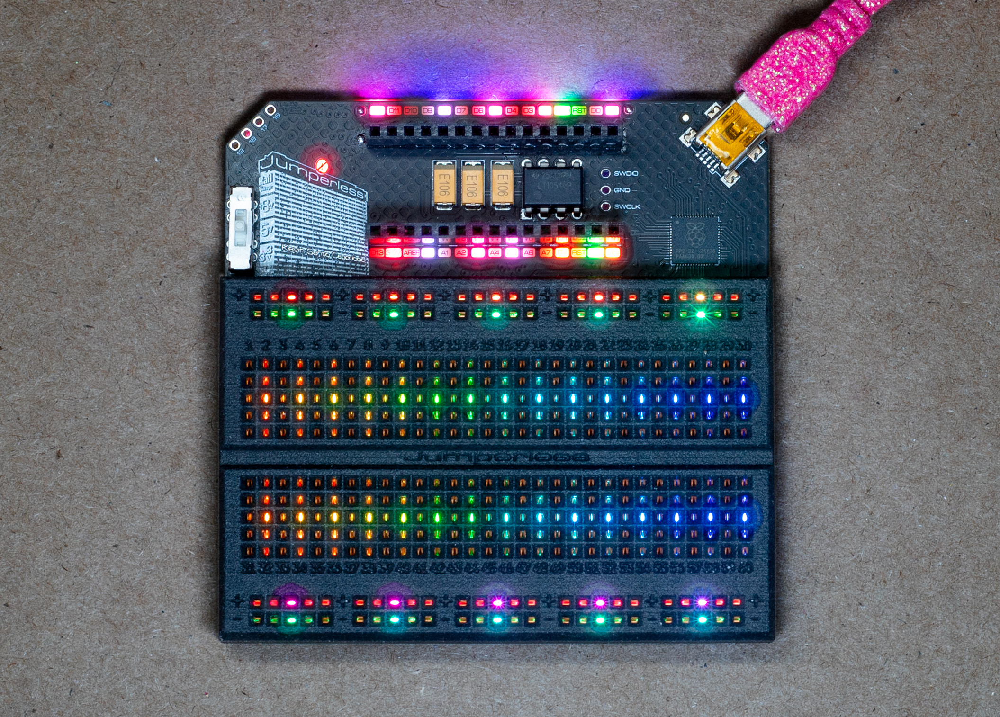
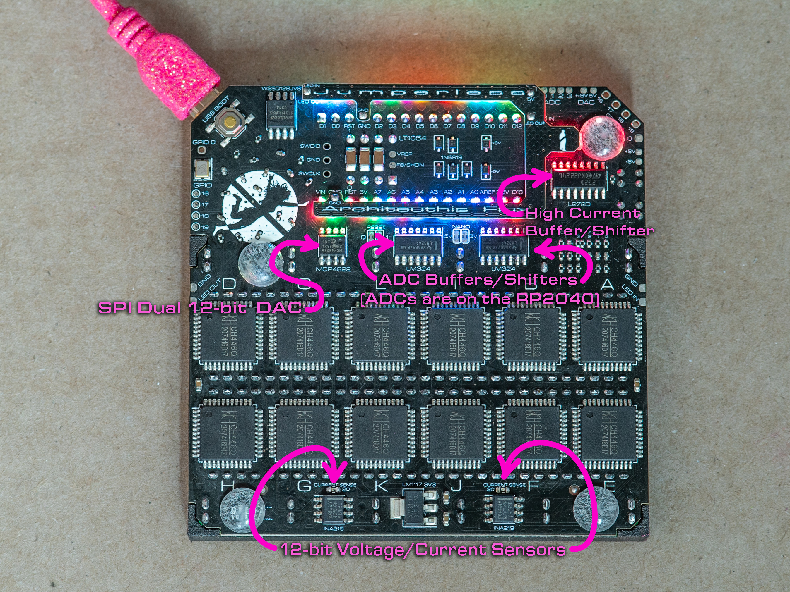

OG Jumperless
The original Jumperless (the one with the Nano header across the top and a single LED under each row) runs the same JumperlOS firmware as the V5 now. Everything else in these docs is written for the V5.

Getting the firmware
Every JumperlOS release has an OG build next to the V5 one, called firmware_og_backport.1.x.x.x.uf2 (the version starts with a 1 instead of a 5). It's on the JumperlOS releases page, and it should also show up on the latest release in the old Jumperless repo.
Hold the USB BOOT button (it's on the back, next to the USB port) while you plug it in, a drive called RPI-RP2 shows up, drag the .uf2 onto it. Open the first serial port in any terminal and type ? to check the version.
Note
The probe stuff on this page is newer than 1.7.11.0, so until the next release you need a firmware built from the dev branch for it.

What's different
| V5 | OG | |
|---|---|---|
| Rails | 4 rails you set from the firmware, -8V to +8V | a switch under the probe header, 3.3V / 5V / ±8V, the firmware can't see it |
| Probe | 2 buttons, a Select / Measure switch, sensed through pads |
a needle and 1 button, sensed by a tone through the crossbar |
| LEDs | 5 per row (that's how it writes text on the breadboard) | 1 per row, so the terminal is where the words go |
| DACs | DAC 0 and DAC 1, ±8V |
DAC 0 0 to 4.096V, DAC 1 about -6.9V to +7V |
| ADCs | 8, ±8V | ADC 0 to ADC 2 0 to 5V, ADC 3 ±8V |
| Routable GPIO | GPIO 1 to GPIO 8 plus UART |
GPIO 0 plus UART Tx / Rx |
| Click wheel, OLED | yes | no (so none of the wheel menus, and no idle-mode stuff) |
| MicroPython | 64K heap plus the PSRAM | 24K heap, no PSRAM, so keep scripts small |
The node names are the same on both, so + 1-5,10-gnd in the terminal, the MicroPython API, slots, and the config file all work the same. Anything about rail voltages, the click wheel, the OLED, or the special function pads just doesn't apply.
The probe
The OG probe is a kit you solder up, here's the guide. Plug it into the bottom 2 holes of the 4-hole header at the top left corner, labeled 18 and 19. If pressing the button puts the Jumperless in probe mode but doesn't light the LED or sense rows, the Button and Probe connections are swapped, just turn the connector around.
Keep the rail switch under that header on 3.3V or 5V whenever the probe is plugged in. On ±8V a rail tap puts 8V straight into the probe input and you can damage it.
There's one button, so the modes come from how long you hold it:
- short press =
connectmode - long press (hold it for 750ms) =
clearmode
The LED on the probe lights while you're in a session, and the logo LED tells you which mode you're in:
- pink =
connectmode (brighter once you'reholdinga row) - orange =
clearmode - blue = it's asking you something, either which rows you meant or which voltage
- slowly drifting color = idle, not in a mode
(Same color code the old OG firmware used, minus the swirl. One LED cycling the whole rainbow every 3 seconds reads as a blinking light rather than a swirl, so idle drifts through a lap in about 26s instead. It's a bit less saturated than the rainbow too, though not by as much as you'd think, the logo LED shines up through the PCB and that filters out a lot of the color.)
Connecting rows
Short press the button, the terminal says connect nodes. Tap a row and its LED comes on while you're holding it (if that row is already in a net the LED can drop back to the net's color, the logo still shows bright pink so you know it's held), then tap another row and they're connected and the whole net gets a color.
While you're holding a row:
- short press drops it and you can start over (with nothing held, a short press leaves
connectmode) - long press switches to
clearmode
The probe finds the needle by sending a tone through the crossbar into each row in turn, and it needs the crossbar empty to do that, so the board's connections are all lifted for the length of the session and put back when you leave. Your circuit stops while you probe. (The V5 doesn't have this problem, its probe is sensed through pads.)
One more thing that falls out of that: a row that's tied to a rail through a part (a pull-up resistor to 5V, an LED to GND) looks like the rail to the needle, not like a row.
Rails
The rail strips on the OG are whatever the switch says (+ is 3.3V, 5V or +8V and - is ground or -8V), and the firmware has no way to read that switch, so they aren't nodes. What it does have are the internal supply nodes 3V3 and 5V, and those are what a rail tap connects you to.
So when you tap a + rail while probing, it asks which one you want:
3.3V short press = 5V, long press = select
Both + rail strips light up in the color of the current pick (amber for 3V3, red-orange for 5V), short press flips it, long press selects it. Then tap the row you want it on.
It remembers your last answer and offers that first, until you reboot. Tapping a - rail just gives you GND, no questions.
Why does it ask every time? Because the switch is right there and you can flip it whenever, and the firmware would never know. Answering with the one that matches the switch means the rail strip and the rows you connect agree.
If you want something other than 3.3V or 5V, that's what the DACs are for. DAC 0 does 0 to 4.096V and DAC 1 does about -6.9V to +7V, and they're nodes you connect to a row like anything else:
dac_set(DAC1, 2.5)
connect(DAC1, 12)
(Or + DAC1-12 in the terminal.) The DAC voltages get saved with the slot.
Multiple rows
Real parts short rows together. Tap a row with a resistor in it and the needle sees both ends, so the firmware can't know which row you meant. When that happens all the rows it found light up pink, one brighter than the rest, and the terminal lists them. The pink wins over whatever color those rows already had, so it still reads if they're part of a net already:
[5] 12 short press = next, long press = select
short press moves the bright one along, long press picks it and the session carries on with that row. Take the probe off the board first if you want, the chooser stays up until you pick something (or until you tap a different row, which starts over).
A press right after the needle lands opens the chooser too, you don't have to wait for the rows to light up. (Pressing at the same instant you touch down is different, the button shorts the probe tip while it's held so nothing can be sensed until you let go.)
The rail voltage question works the same way, poke the rail and then answer it with the probe off the board. (The firmware watches the row for about 45ms before it decides, because one pass of the tone doesn't reliably see both ends of a short. If a pair still comes up as a single row, lmk and I'll stretch that window.)
Clearing rows
Long press the button (or long press from connect mode), the terminal says clear nodes. Tap a row and it gets disconnected from whatever it was bridged to. Same as the V5, it only removes that node's own bridges, not the whole net. In clear mode a short press leaves, a long press goes back to connect.
A session times out on its own after 80s of nothing, and typing anything in the terminal ends it too.
Measuring
To read a voltage (the OG probe has no Measure switch), connect one of the ADCs to the row (ADC 3 is the ±8V one, the other 3 are 0 to 5V) and read it with adc_get(3) from MicroPython. Both INA219 current sensors are there too, ina_get_current(0) is the one in the crossbar's I_P / I_N path (connect those two nodes in series with what you're measuring), ina_get_current(1) sits on the DAC output.